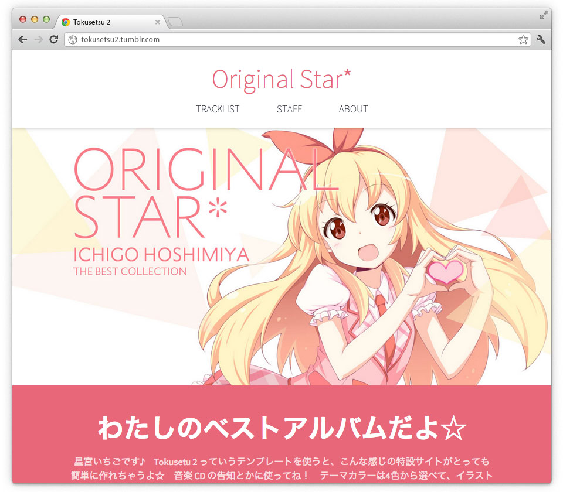

同人音楽CD特設サイトを一瞬で作ろう
Tokusetsu 2は、同人音楽CDの特設サイトが簡単に作れる無料Tumblrテンプレート（テーマ）です。
HTMLの知識を必要とせず、フォームに情報を入力していくだけで特設サイトが作れます。


一瞬で完成
Tokusetsu 2 は、最速で特設サイトを作る方法です。あなたは画像を2種類用意するだけ。あとはフォームに必要な情報を入力していけば、あっという間に同人音楽CD特設サイトが作れます。
新しいデザイン
Tokusetsu 1で好評だった「特設サイトが一瞬で作れる」コンセプトはそのままに、 完全に新しいデザインに作り直しました。同人音楽で活動しているみなさまのために設計した Tumblr テーマです。
PCでもスマホでも快適
今や、パソコンよりもスマートフォンからのアクセスの方が多い時代です。Tokusetsu 2 はレスポンシブデザインに対応し、タブレットやスマートフォンにも最適化したレイアウトで表示します。イベント会場からでも快適に閲覧できます。